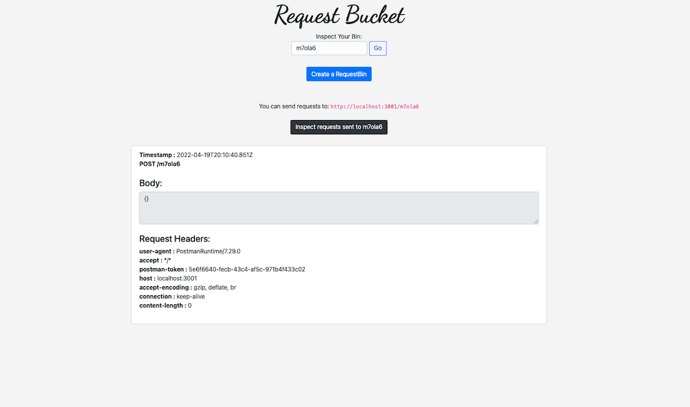
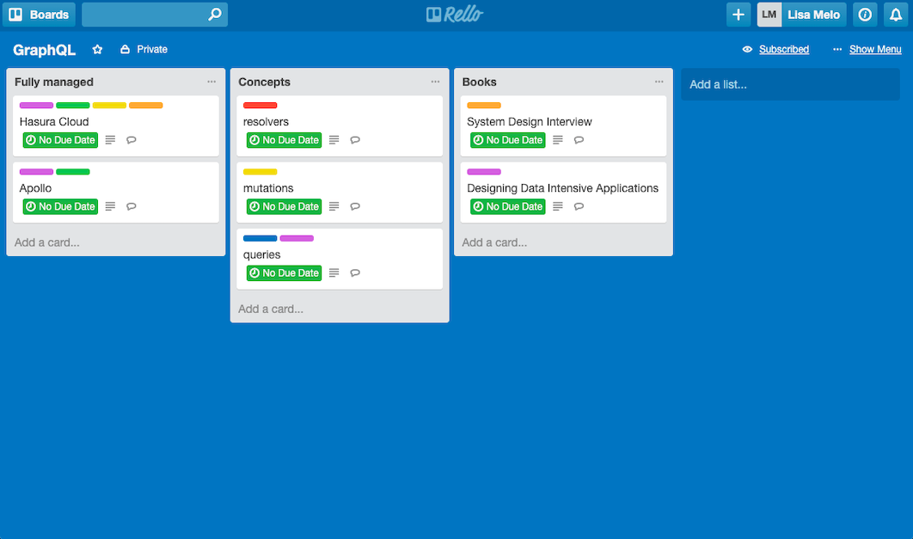
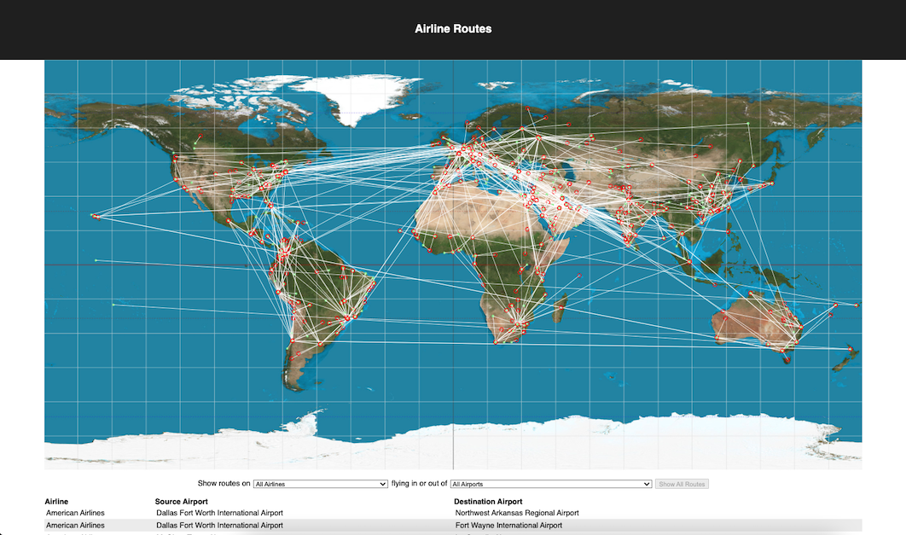

Hey, I'm Lisa!
I'm a software engineer based in Montreal, Canada, with experience in JavaScript, React, Ruby, PostgreSQL, GraphQL, Docker, Go and more.
I recently built QMantis, an open-source observability tool for GraphQL APIs.
QMantis is an open-source observability tool for GraphQL APIs, built with Node.js, OpenTelemetry, TimescaleDB and leveraging Docker for quick deployment of the QMantis architecture.
QMantis offers an easy-to-use UI with pre-configured Grafana dashboards for metrics and GraphQL-specific traces data analysis.
QMantis abstracts away the complexity of generating, processing, exporting, storing, and visualizing telemetry data, making it easy to track errors and analyze an API's performance at the resolver level. It helps engineering teams monitor a GraphQL API's health, allowing them to quickly visualize exactly which requests are performing poorly, even in complex operations.
Other projects
-

RequestBucket
RequestBin clone for receiving and debugging webhooks
Node.js Express MongoDB React
-

Rello
Trello-like board app for task management
Node.js Express MongoDB React Redux
-

Airline Routes
React app allowing users to filter routes by airline and airport
React